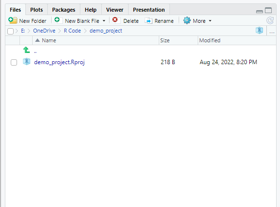
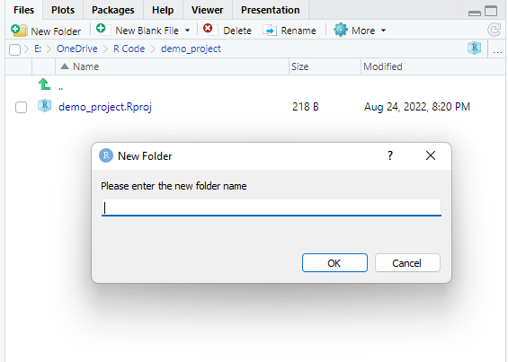
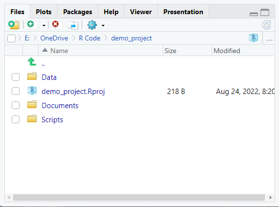
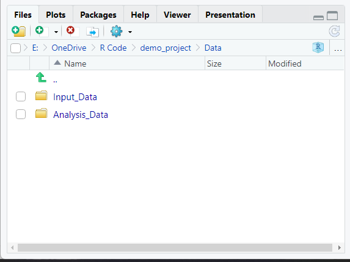
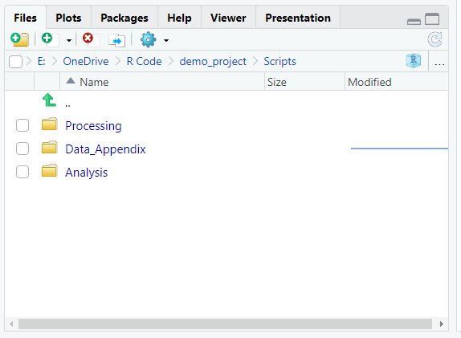

2.1 Create TIER Folders
2.1.1 Problem
You want to create folders in accordance with Project TIER’s protocol.
2.1.2 Solution
- You should have already created a project.

- In the Files, Plots, Packages, Help, Viewer pane there is a button that says “New Folder.”

- Click that button to create three folders named “Data”, “Documents”, and “Script”. When you are finished the project folder should look like this:

- Inside the “Data” folder, create two folders named “Input_Data” and “Analysis_Data”.

- Inside the “Scripts” folder, create three folders named “Processing”, “Data_Appendix”, and “Analysis”.

2.1.3 Troubleshooting
- The actual names of the folder are not important. However, you should be consistent with how you name the folders across projects. That will help you to remember the role that each folder serves.
- Keep in mind that you will use these folder names in your relative paths.